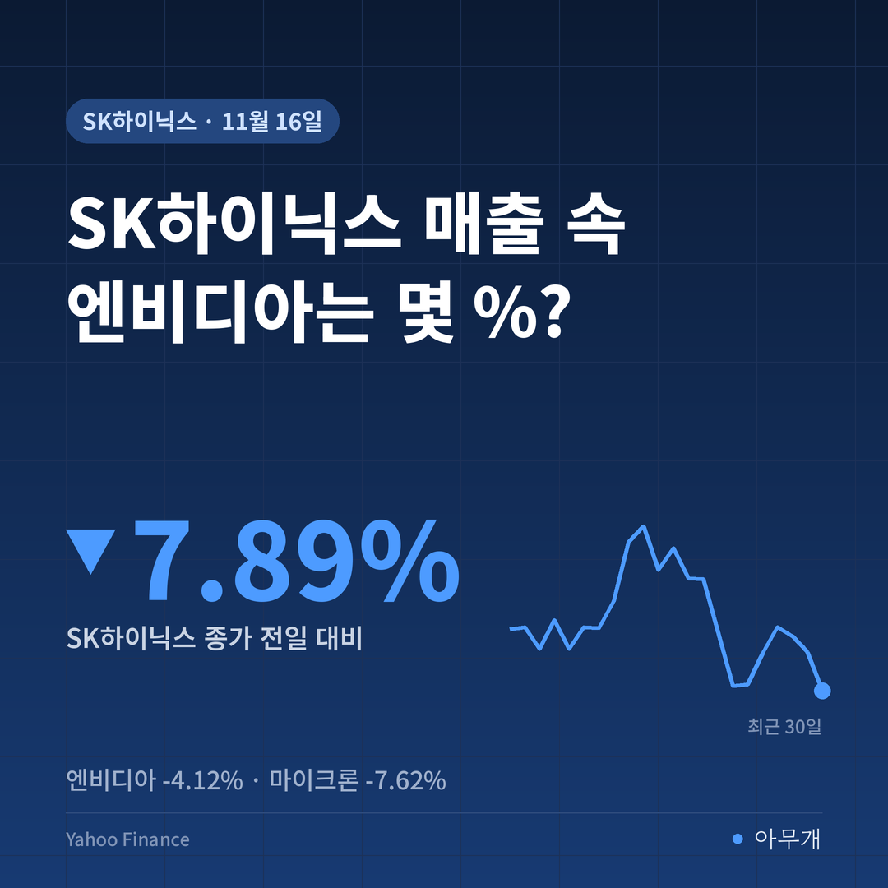
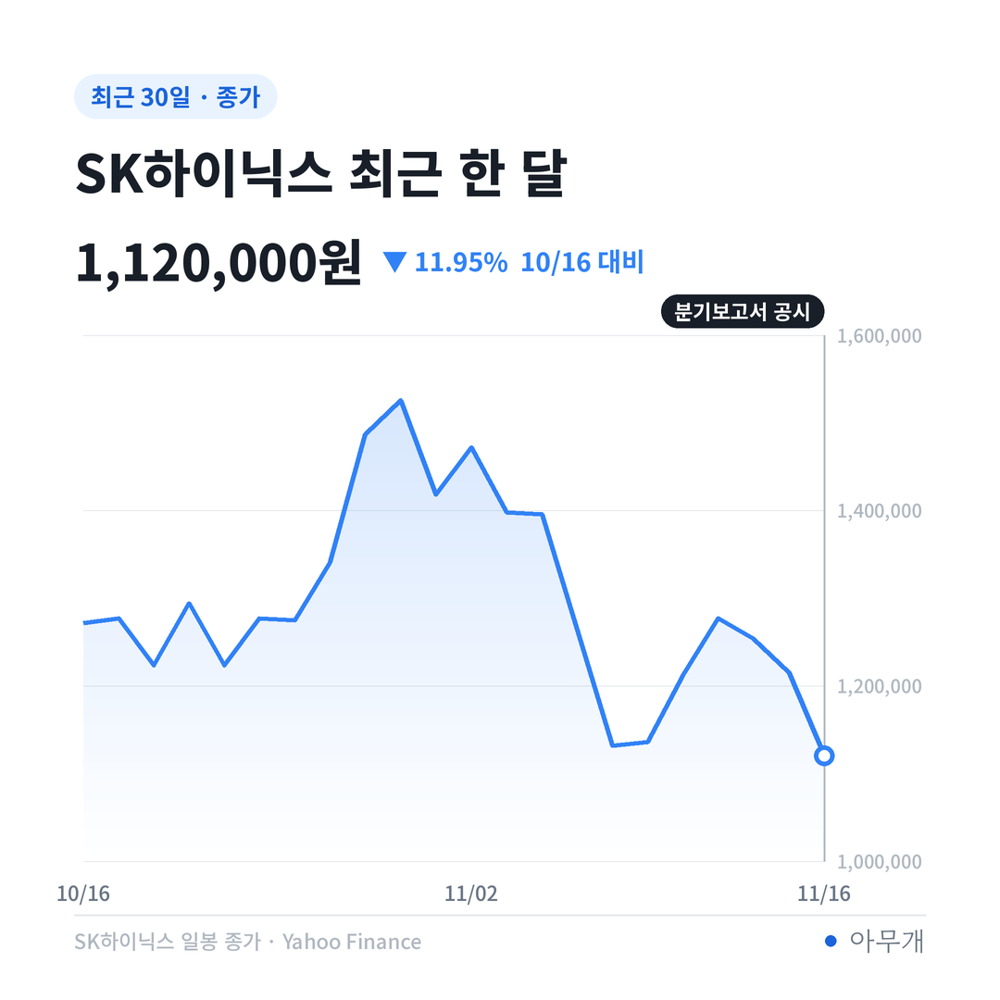
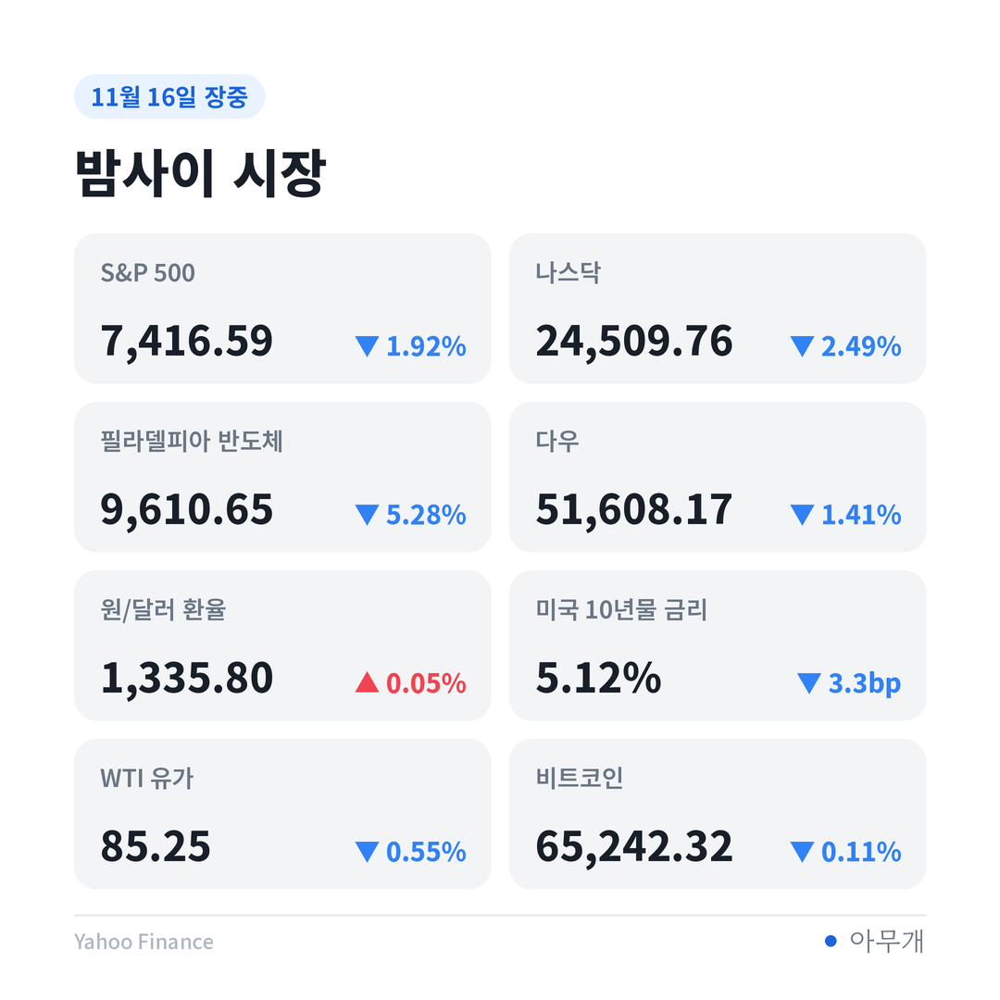
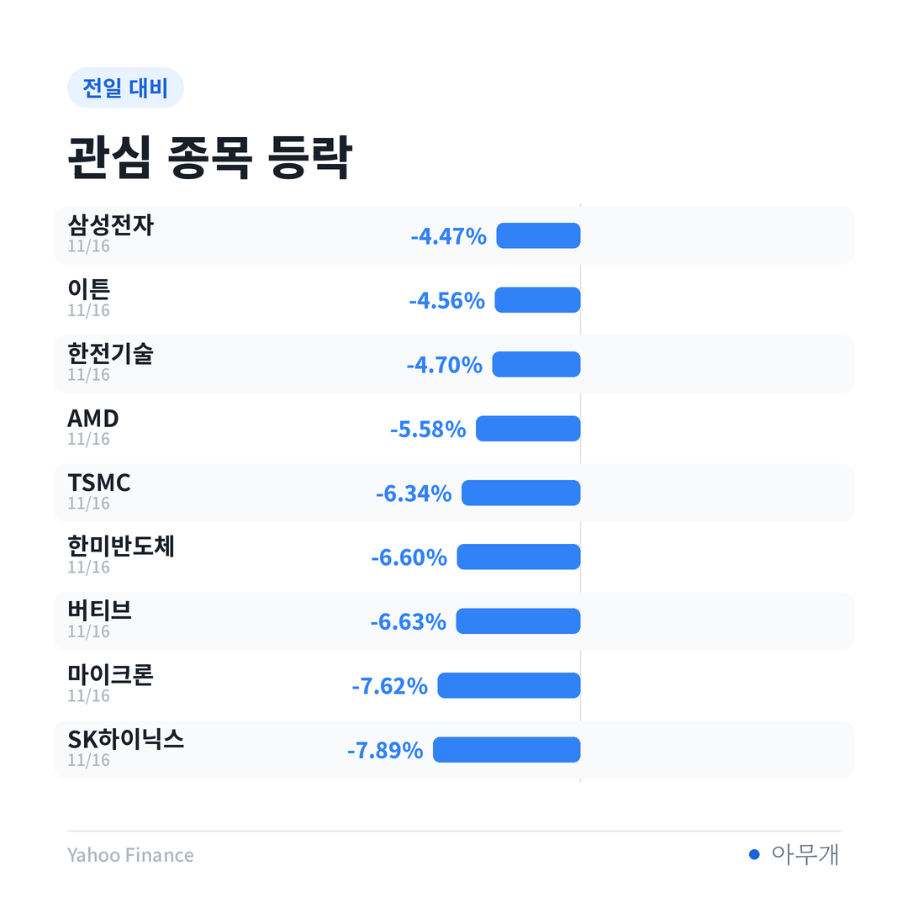

📷 사진 1 자리
분기보고서 속 엔비디아 몫
16일 SK하이닉스가 낸 3분기 분기보고서에는 어디에, 누구에게 팔았는지가 적혀 있어요[1]. 고객 이름은 공시에 나오지 않아 엔비디아 몫은 업계 추정치예요[1][2].
📷 사진 2 자리
| 항목 | 3분기 누적 | 전체 매출 대비 |
|---|---|---|
| 전체 매출 | 236조5,105억원[1] | 100% |
| 미국 매출 | 147조7,392억원[1] | 62.5%[1] |
| 중국 매출 | 56조1,378억원[1] | 23.7%[1] |
| 엔비디아(추정) | 34조9,778억원[1][2] | 14.8%[1] |
| 다른 빅테크 1곳 | 23조8,509억원[1] | 10.1%[1] |
엔비디아 매출은 1년 전 17조3,551억원에서 101.5% 늘었어요[1]. 미국 매출도 1년 새 102조원 넘게 불었어요[1][2]. 숫자만 보면 '엔비디아 없으면 끝'이라는 말과는 거리가 있어요. 직접 매출의 85% 정도는 엔비디아 밖에서 나와요.
두 큰 고객을 합치면 이야기가 조금 달라져요. 엔비디아와 이름이 공개되지 않은 빅테크 한 곳을 더하면 58조8,287억원, 전체의 약 24.9%예요[1]. 둘 다 AI 서버에 메모리를 쓰는 고객이라 같은 바람을 맞을 가능성이 커요.
밤사이 메모리가 더 빠진 이유
16일(현지) 뉴욕에서 필라델피아 반도체지수는 9,610.65로 -5.28%, 나스닥은 -2.49%였어요. 엔비디아는 156.14달러(-4.12%)였는데 마이크론 719.02달러(-7.62%), TSMC -6.34%, SK하이닉스 ADR -7.29%가 더 크게 밀렸어요[3].
📷 사진 3 자리
이날 나온 재료는 셋이었어요. 엔비디아 이사회가 젠슨 황 복귀를 검토하지 않는다는 보도, 베선트 재무장관의 외부 CEO 촉구, 그리고 상무부의 새 수출 통제예요[3]. 상무부 규정은 중국 기업이 제3국 데이터센터를 빌려 미국 AI 칩을 쓰는 길을 막고 싱가포르·말레이시아·태국·인도네시아·브라질로 첨단 칩을 보낼 때 허가를 받게 했어요[4]. 칩을 파는 곳이 줄면 그 칩에 붙는 HBM(고대역폭 메모리) 주문도 같이 영향을 받는다는 계산이 메모리 주가에 먼저 반영된 셈이에요.
주식 밖 신호도 같은 방향이었어요. 공포지수 VIX는 22.91로 +18.70% 뛰었고 미국 10년물 금리는 5.121%로 3.3bp(0.01%포인트) 내려 안전자산 쪽으로 돈이 움직였어요. 달러인덱스는 19개월 만에 가장 높은 수준까지 올랐어요[3].
앞으로의 몫이 더 무겁다
오늘 매출 비중이 14.8%라도 주가가 크게 흔들리는 이유는 미래 몫 전망에 있어요. UBS는 세계 HBM 수요에서 엔비디아 비중이 올해 60%에서 내년 41%로 낮아지고 구글은 18%에서 30%, AMD는 7%에서 13%로 높아질 것으로 봤어요[5]. 같은 분석에서 SK하이닉스 HBM 점유율은 지난해 59%, 올해 48%, 내년 39%로 낮아지고 삼성전자가 내년 41%로 앞설 것으로 추정했어요[5].
| 전망 | 누가 | 내용 | 성격 |
|---|---|---|---|
| 엔비디아 HBM 수요 비중 | UBS | 올해 60% → 내년 41%[5] | 🗣️ 증권사 전망 |
| SK하이닉스 HBM 점유율 | UBS | 48% → 내년 39%[5] | 🗣️ 증권사 전망 |
| 삼성전자 수혜 | KB증권 등 | 구글·AMD 물량 확대[5][6] | 🗣️ 증권사 관측 |
| 엔비디아가 계속 주도 | JP모건 | 2025~2027년 HBM 비트 수요 60% 이상[5] | 🗣️ 증권사 전망 |
| 2029년까지 완판 | SK하이닉스 | D램·HBM 물량 3년치 솔드아웃[1] | ✅ 회사 발표 |
산수로 크기를 재 보면 이래요. 엔비디아 주문이 20% 줄고 다른 고객이 전혀 채우지 못한다고 가정하면 약 7조원, 3분기 누적 매출의 약 3%가 빠지는 크기예요[1]. 매출 충격은 생각보다 작지만, HBM은 이익이 많이 남는 제품이라 이익 쪽 충격은 이 비율보다 클 수 있어요.
국내 반도체 주주가 볼 숫자
16일 국내장에서 SK하이닉스는 1,120,000원(-7.89%), 삼성전자는 196,800원(-4.47%), 한미반도체는 169,700원(-6.60%)으로 마감했어요. 외국인은 삼성전자를 6,193억원, SK하이닉스를 2,241억원어치 팔았어요[10].
📷 사진 4 자리
SK하이닉스는 이미 올해 3분기까지 설비투자에 31조2,160억원을 썼어요[8][9]. 지난해 1년치 30조1,730억원을 9개월 만에 넘었어요[8]. 공장을 크게 늘리는 중이라 고객 주문이 계속 이어지는지가 주가에 더 민감하게 반영될 수 있어요.
실적표가 SK하이닉스에 닿는 경로
| 시나리오 | 무엇을 보면 되나 | 예상되는 영향 |
|---|---|---|
| 마진 방어 | 매출총이익률이 시장 예상 74.1% 안팎인지, 직전 분기 75.0%와 비교[7] | 고객 쪽 수요가 견조하다는 신호로 HBM 걱정이 일부 풀릴 수 있음 |
| 투자 축소 신호 | 파트너 자금 지원·데이터센터 보증을 줄인다는 설명[7] | 엔비디아 몫 비중이 큰 SK하이닉스에 부담 |
| 수출 규제 영향 | 동남아 매출과 새 허가 규정에 대한 회사 설명[4] | 칩 판매처가 줄면 HBM 주문 전망도 낮아질 수 있음 |
14.8%라는 숫자는 SK하이닉스가 엔비디아 한 곳에 생각만큼 묶여 있지 않다는 뜻이에요. 그래도 지금 주가는 오늘 매출보다 내년 HBM 점유율을 놓고 움직이고 있어서, 실적 발표에서는 엔비디아 매출보다 차세대 제품 일정과 고객 계약 유지 여부가 더 중요해 보여요. 숫자 하나로 정리하면 '의존도는 낮아졌지만 민감도는 높아진 상태'예요.
✍️ 직접 보거나 들은 경험이 있으면 위 문단에 한두 줄 덧붙이세요 (이 안내 줄은 지우기)
반대로 보면 HBM 수요가 엔비디아에서 구글·AMD로 옮겨 가도 전체 시장이 커지면 SK하이닉스 물량은 줄지 않을 수 있어요. 회사도 2029년까지 D램·HBM 물량이 다 팔렸다고 밝혔어요[1]. 점유율 전망은 증권사마다 다르고 JP모건처럼 엔비디아 주도가 이어진다고 보는 곳도 있어요[5].
이번 주 체크리스트
참고한 기사
이 글은 정보 제공 목적이며 투자 권유가 아닙니다. 투자 판단과 책임은 본인에게 있습니다.
수치 출처: Yahoo Finance(시장 숫자), SK하이닉스 분기보고서(연합뉴스 인용), UBS·JP모건(조선일보 인용)



